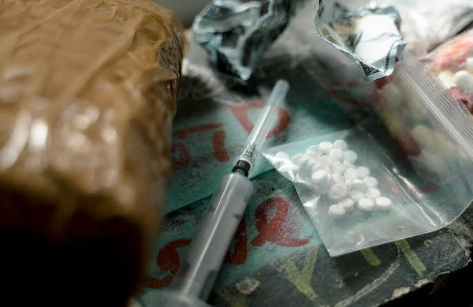
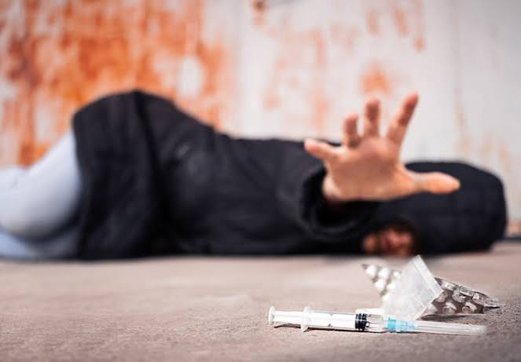
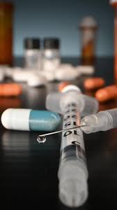
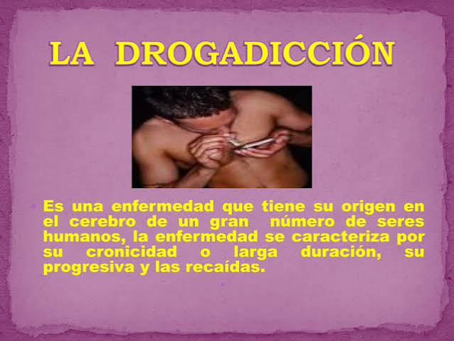

Consumo De Drogas
Las drogas son sustancias químicas que pueden cambiar el funcionamiento del cuerpo y la mente. Incluyen medicamentos recetados, medicamentos de venta libre, alcohol, tabaco y drogas ilegales.
Leer másLas drogas son sustancias químicas que pueden cambiar el funcionamiento del cuerpo y la mente. Incluyen medicamentos recetados, medicamentos de venta libre, alcohol, tabaco y drogas ilegales.
Leer másEl consumo de drogas, o su uso indebido, incluye: El consumo de sustancias ilegales, como: Esteroides anabólicos Drogas del club Cocaína Heroína Inhalantes Cannabis (también conocido como marihuana) Metanfetaminas El uso indebido de medicamentos recetados, incluidos los opioides. Esto significa tomar el medicamento de una manera diferente a la que el proveedor le indicó, lo cual incluye: Tomar un medicamento recetado para otra persona Tomar una dosis mayor que la recomendada Usar el medicamento de una manera diferente a la indicada. Por ejemplo, en vez de tragar las pastillas, triturarlas para luego inhalarlas o inyectárselas Usar el medicamento para otro propósito, como drogarse El uso indebido de medicamentos de venta libre, tales como su uso con otro propósito y de forma diferente a la indicada El consumo de drogas es peligroso. Puede dañar su cerebro y cuerpo, a veces de forma permanente. También puede herir a las personas que le rodean, incluyendo amigos, familia y niños. Si usted está embarazada, puede afectar al feto. El consumo de drogas además puede conducir a trastornos de abuso de sustancia leves, moderados o severos. Los trastornos por uso de sustancias a veces son llamados adicción.



No todas las personas que consumen drogas desarrollan adicción. El cuerpo y cerebro de cada persona son diferentes, por lo que su reacción a las drogas también puede ser diferente. Algunas personas desarrollan adicción rápidamente, mientras que en otras esto podría ocurrir con el tiempo. Otras personas nunca lo hacen. Que alguien tenga o no una adicción depende de muchas cosas, incluyendo factores genéticos, ambientales y de desarrollo.

La drogadicción, o dependencia de sustancias, es una enfermedad crónica del cerebro que causa la necesidad compulsiva de buscar y consumir drogas, a pesar de las consecuencias perjudiciales para la salud y la vida personal del individuo. Características principales • Enfermedad cerebral: Altera la estructura y el funcionamiento del cerebro, modificando áreas relacionadas con la recompensa, el autocontrol y la toma de decisiones. • Pérdida de control: La persona muestra una incapacidad para dejar de consumir la sustancia, incluso cuando desea hacerlo. • Tolerancia y abstinencia: Requiere cada vez más cantidad de la droga para sentir el mismo efecto (tolerancia) y experimenta malestares físicos y emocionales severos cuando se detiene el consumo (síndrome de abstinencia). Tipos de sustancias implicadas • Drogas legales: Como el alcohol y el tabaco. • Medicamentos con prescripción: Como los opioides, sedantes o estimulantes. • Drogas ilegales: Como la cocaína, la heroína, las metanfetaminas o el cannabis en jurisdicciones donde no está regulado.
Los tratamientos para la adicción a las drogas incluyen consejería, medicamentos o ambos. La investigación muestra que combinar medicamentos con consejería brinda a la mayoría de las personas la mejor oportunidad de éxito. La consejería puede ser terapia individual, familiar o grupal. Puede ayudar a: Comprender por qué comenzó la adicción Observar cómo las drogas cambiaron su comportamiento Aprender a manejar sus problemas Aprender a evitar personas, situaciones y lugares en los que podría haber drogas disponibles Si elimina o reduce el consumo de drogas que ha usado por un tiempo, podría presentar diferentes síntomas según la droga. Esto se llama abstinencia y los medicamentos pueden ayudar con los síntomas. Para la adicción a ciertas drogas existen medicamentos que pueden ayudar a restablecer la función cerebral normal y disminuir la ansiedad por consumir drogas. Si tiene un trastorno mental además de una adicción, se conoce como diagnóstico dual. Es importante tratar ambos problemas para aumentar las posibilidades de éxito del tratamiento. Si tiene una adicción grave, es posible que necesite tratamiento hospitalario o residencial. Los programas de tratamiento residencial combinan servicios de vivienda y tratamiento.